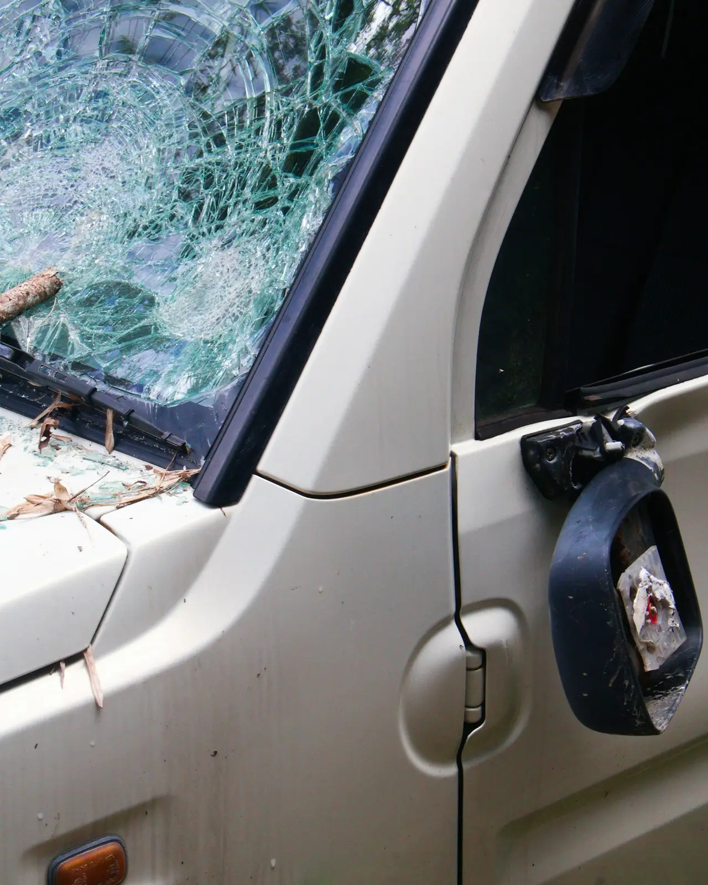

Windshield Replacement in Wichita, KS
Windshield replacement in Wichita for cars, trucks and SUVs with cracks, hail damage or chips too big to fill. A technician comes to your driveway or work lot, installs the correct glass for your vehicle, and calibrates the camera if your car has one. Call (316) 669-4751 with your VIN for a quote.
What Does Windshield Replacement Involve?
A windshield replacement in Wichita starts with matching the glass to your VIN. Then the technician removes the wipers and cowl, cuts the old urethane bead, and lifts the cracked windshield out.
The frame is cleaned and primed so the new adhesive bonds to bare, clean metal. A fresh urethane bead goes down, the new windshield is set with suction cups, and the trim and wipers go back on. The whole install runs 60 to 90 minutes, plus about an hour of cure time.

When Do You Need a New Windshield?
- A crack longer than about six inches, or one that keeps growing
- Damage right in front of the driver, where a repair would leave a blur
- A chip or crack that reaches the edge of the glass
- Hail pitting across the windshield after a Wichita spring storm
- Leaks or wind noise from a bad earlier install
If you're on the fence, a quick call usually settles it. The question we get most is "Can you just fill it?" If it's longer than a dollar bill, the honest answer is no.
Why Do Windshields Crack in Wichita?
Mostly rocks and temperature. Gravel trucks and construction zones on I-135, I-235 and Kellogg throw stones every day, and a chip weakens the glass at one point.
Kansas weather finishes the job. A 30-degree swing between a sunny afternoon and a cold night, or blasting the defroster on a frosted windshield in January, stresses that weak spot until it runs. Hail is its own problem: Wichita sits in one of the most active hail areas in the country, and big stones can break a windshield outright.
What Affects the Cost of Windshield Replacement in Wichita?
We give real quotes, not website prices, because these things change the number a lot:
- Year, make and model of the vehicle
- Rain sensors, heated glass, acoustic glass or a heads-up display
- Whether the forward camera needs ADAS calibration
- Factory-brand (OEM) glass or OEM-equivalent glass
- Your comp deductible, if insurance is paying
Call (316) 669-4751 with your VIN and we'll quote it while you're on the phone.
Windshield Repair vs. Replacement: Which Do You Need?
Repair works when the damage is small: a chip under the size of a quarter or a single short crack, not in the driver's direct view, and not at the edge. It takes about 30 minutes and keeps your factory seal.
Replacement is the answer for long cracks, edge cracks, hail damage across the glass, or anything that blocks the driver's view. If you can cover the damage with a quarter, ask about rock chip repair in Wichita first.
Frequently Asked Questions
How long after windshield replacement can I drive in Wichita?
Plan on about one hour after the install before you drive, so the urethane can cure enough to hold the glass safely. Cold or damp Wichita weather can stretch that time, and your technician will give you the exact safe drive-away time for the adhesive used.
Will my insurance pay for a new windshield in Kansas?
If you carry comp coverage, a windshield replacement from hail or a rock is usually covered, minus your deductible. Kansas drivers can choose their own glass shop, and we can help you start the claim on the phone.
Do I need ADAS calibration after windshield replacement?
If your car has a camera behind the rearview mirror for lane-keep assist or automatic braking, yes. The camera has to be re-aimed after a new windshield goes in, and we handle that calibration as part of the job in Wichita.
Can you replace a windshield in the cold in Wichita?
Yes, within limits. Urethane bonds best above freezing and on dry glass, so on very cold, wet or windy days we may move the appointment or work in a covered spot like a garage. We’d rather reschedule than risk a leak.
Cracked glass in Wichita? Get it handled this week.
Call and tell us the year, make and model. We’ll give you a straight quote and a time slot.